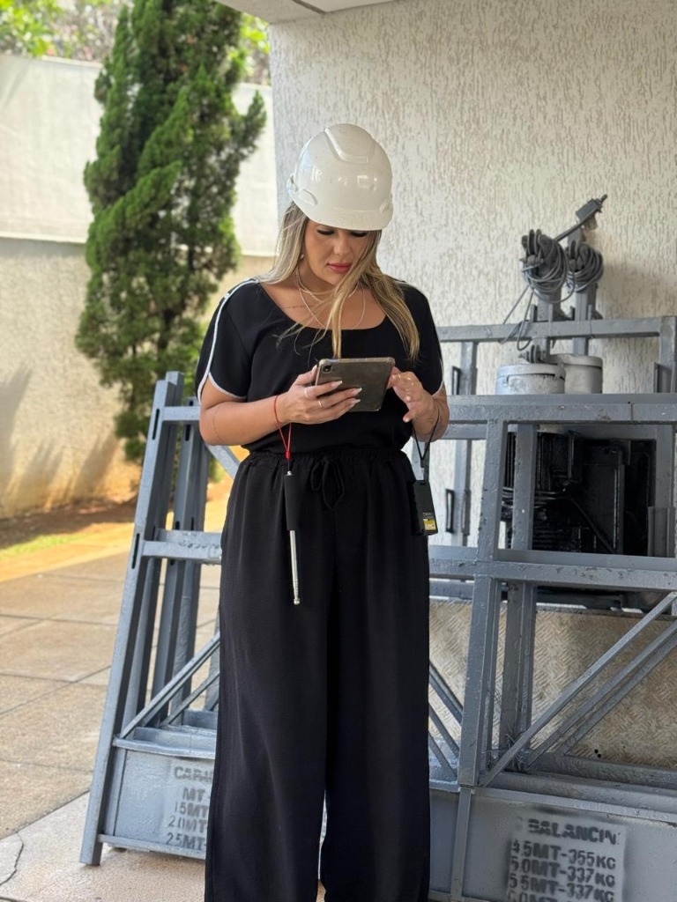
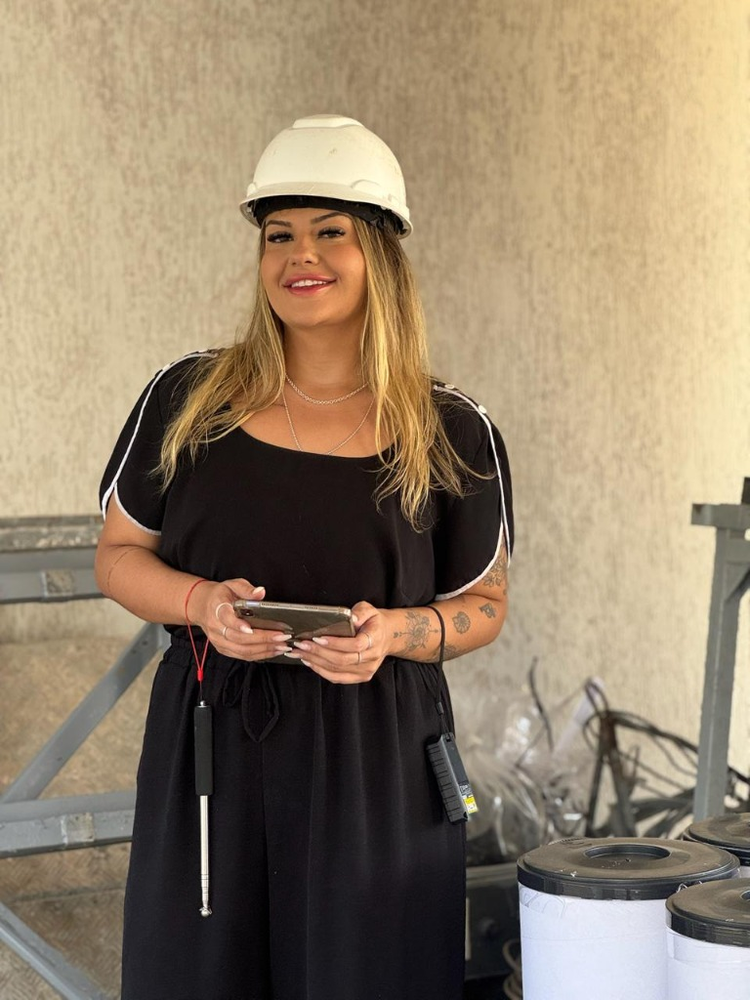

Atuação especializada em serviços técnicos de arquitetura, com foco em investigação de manifestações patológicas, elaboração de laudos, suporte pericial e regularização imobiliária.
Combinando rigor investigativo a uma visão jurídica e imobiliária integrada, cada laudo é estruturado para esclarecer a verdade dos fatos, mensurar riscos e garantir respaldo definitivo ao seu patrimônio.
Ambas as frentes de atendimento são centralizadas no mesmo canal com triagem direta e ágil.

Rigor na investigação, clareza no diagnóstico e força probatória para respaldar decisões técnicas e processos judiciais.
Atuação técnica estratégica em litígios imobiliários, perícias e suporte probatório. Traduzimos anomalias construtivas e divergências documentais em laudos periciais com rigor científico e peso comprobatório perante o juízo.


Diagnóstico científico que investiga os sintomas patológicos até encontrar sua origem física ou química. Soluções definitivas para vícios construtivos ocultos, falhas de impermeabilização e anomalias estruturais.
Com formação em Arquitetura e especialização em Patologia das Construções e Perícia Judicial, Giovanna une a vivência prática dos canteiros de obras à precisão na confecção de pareceres técnicos irrefutáveis.
Seu trabalho é fundamentado na busca pela causa real das anomalias, garantindo que proprietários, condomínios e operadores do direito tenham total segurança técnica ao tomar decisões que envolvem o patrimônio edificado.

Você entra em contato pelo WhatsApp único (31) 99561-8646, informa se a demanda é de Patologia Predial ou Perícia Imobiliária/Judicial e envia os primeiros registros e dados do imóvel.
Inspeção minuciosa com levantamento métrico, ensaios não destrutivos, mapeamento fotográfico e correlação técnica com as normas vigentes (ABNT e IBAPE).
Entrega do Laudo Técnico Pericial fundamentado com RRT/ART, com força jurídica para negociações amigáveis ou respaldo probatório irrefutável em ações judiciais.
Entenda como funciona a atuação da Giovanna em ambas as áreas.
Descreva seu caso ou a etapa do seu processo para um primeiro direcionamento técnico.
Belo Horizonte · MG
Atendimento presencial em toda a RMBH
Segunda a Sexta
das 8h às 18h
Para agilizar o entendimento da sua demanda:
O retorno inicial é direto e descomplicado.
Enviar dados pelo WhatsApp